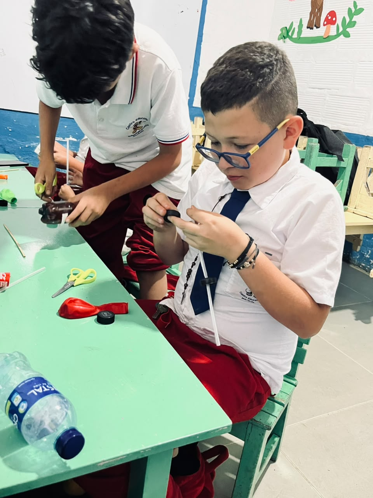
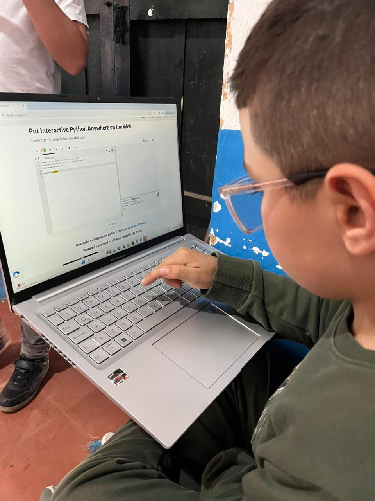
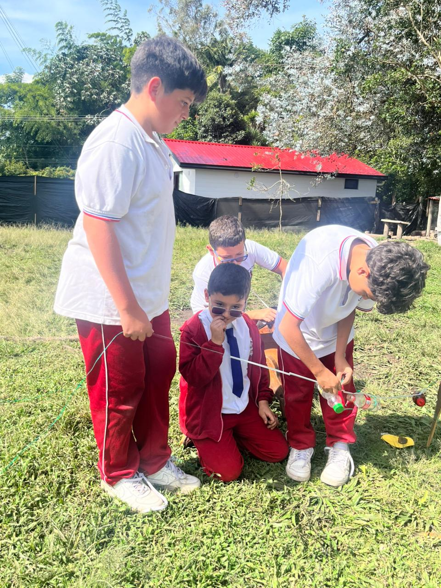
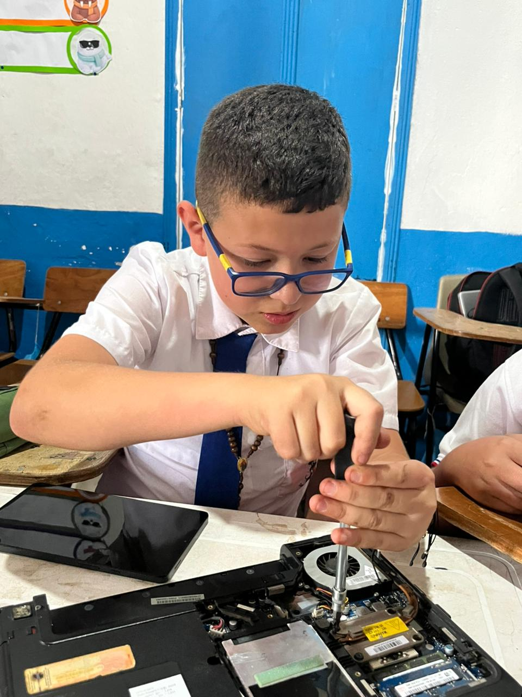
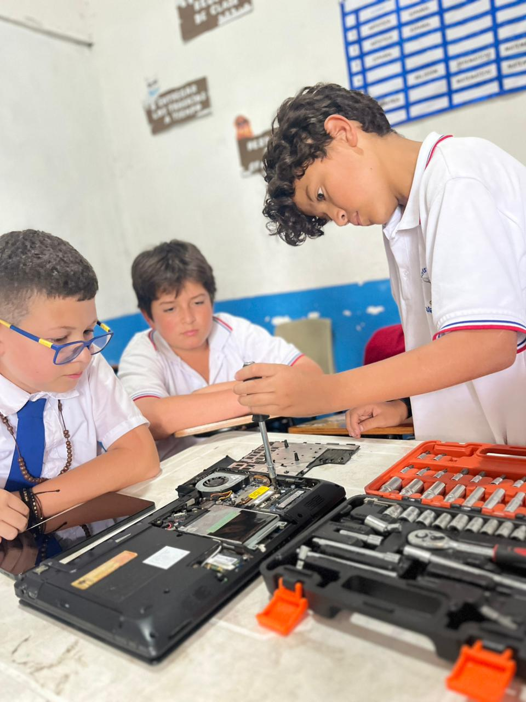

Taller de física
Carro impulsado por globo
Con tapas de botella, pitillos, palos de pincho y un globo armaron un carrito que avanza con el aire que sale del globo.
Generación 2026: misión completada
Una recopilación del año: armamos carros con globos, abrimos computadores, programamos en Scratch y Python, y entrenamos una inteligencia artificial con nuestro cuerpo. Mira cada momento y aplaude a sus protagonistas.
0 fotos, 0 videos y 0 aplausos hasta ahora
Toca una foto para verla en grande

Taller de física
Con tapas de botella, pitillos, palos de pincho y un globo armaron un carrito que avanza con el aire que sale del globo.

Programación
Un programa que le pide dos números al usuario y hace cálculos con ellos. ¡Las primeras líneas de código de verdad!

Al aire libre
En la cancha, el equipo probó cómo viaja por una cuerda un vehículo hecho con botellas recicladas.

Hardware
Destornillador en mano para conocer las piezas por dentro: el ventilador, la memoria RAM y la tarjeta principal.

Hardware
Entre todos abrieron un portátil, con caja de herramientas incluida, para aprender a cuidarlo y repararlo.
Dale play para verlos
Marzo 2026
Bloque a bloque, construyendo un programa en Scratch desde el portátil.
Marzo 2026
En pareja arman un juego en Scratch y lo prueban con el teclado y el mouse.
Marzo 2026
Probando en la tableta un juego de carreras: ¡a esquivar y llegar a la meta!
Julio 2026
Entrenaron un modelo de inteligencia artificial que, con la cámara, reconoce la postura del cuerpo y dice cuál es.
Julio 2026
Frente a la cámara, cada pose cambia la respuesta del modelo. ¡Así aprende una máquina!